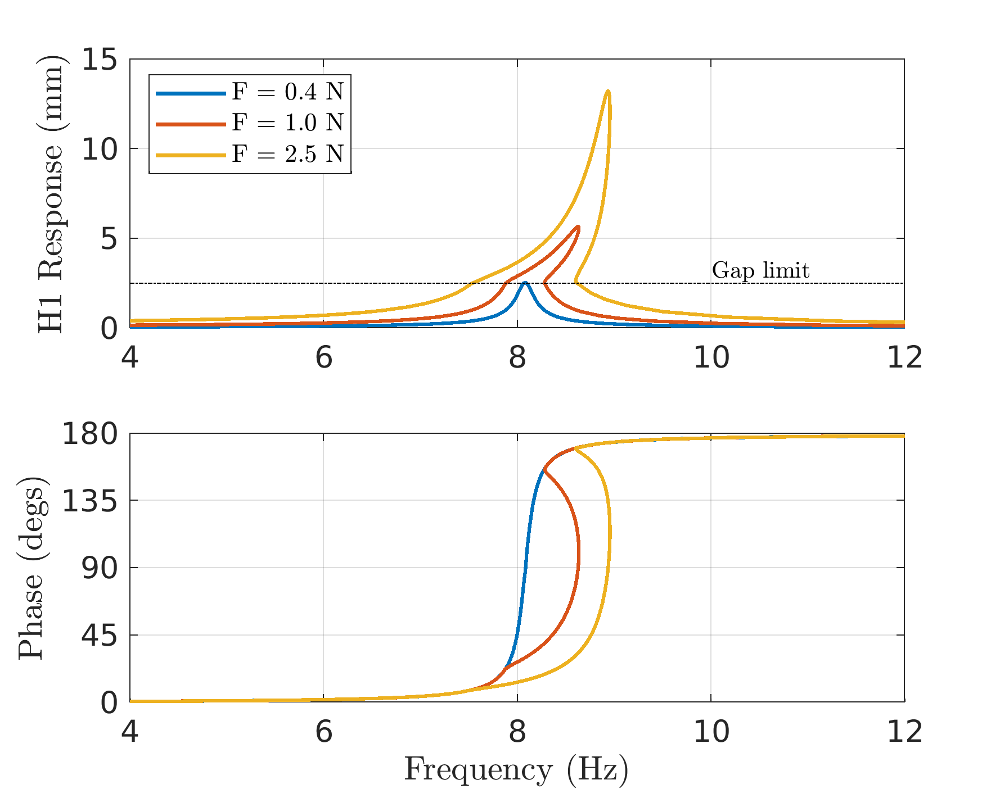
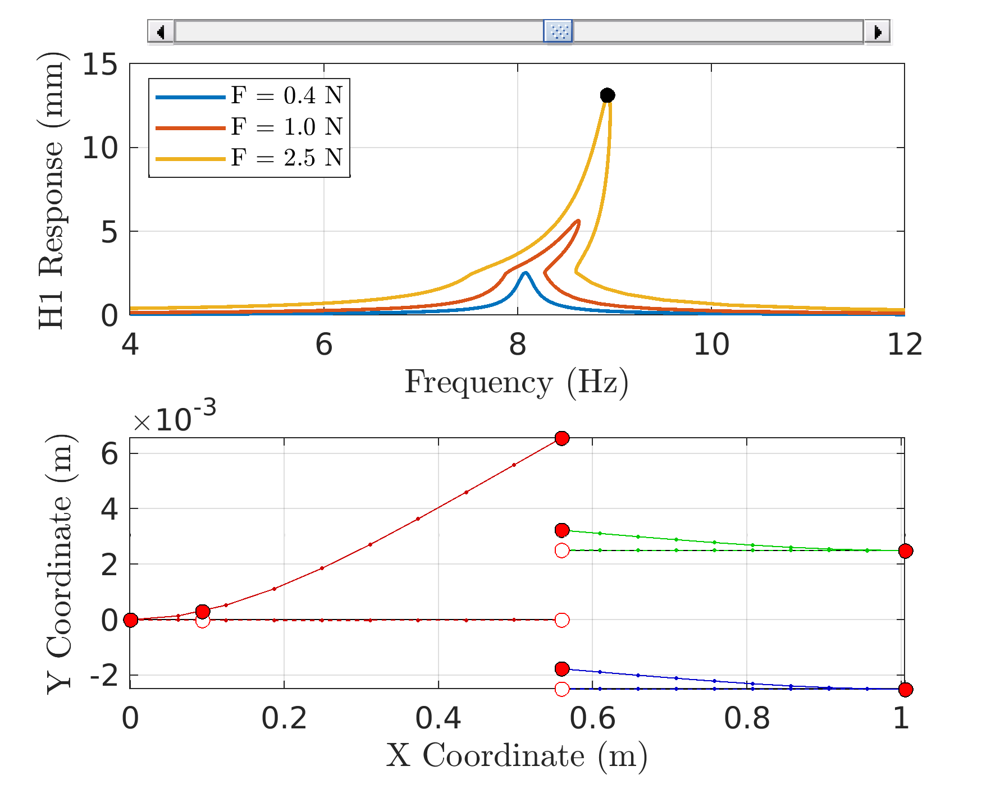

WaveVib - An OCTAVE/MATLAB Toolbox for Wave-Based Modeling of Nonlinear Jointed Structures
Table of Contents
1. Introduction
WaveVib is intended to be a set of OCTAVE/MATLAB routines that can be used to study wave-based linear and nonlinear structures. The main advantage with using this approach comes from the fact that the linear portions of the problem are represented without any approximation (unlike weighted residual or variational approaches). The interface supports both periodic as well as quasi-periodic steady state response regimes. Immediate use cases include jointed beams, trusses, frame structures, fluid-filled columns, rotordynamics, etc.
A good starting place for the new user to the Wave-Based Modeling (WBM) framework &/or this package are the papers [1], [2], upon which most of the rudiments of this package are based. The code is hosted on github here: https://github.com/Nidish96/wavevib
1.1. The different folders in the repository
- ROUTINES Contains the core routines of the package.
- EXAMPLES Contains examples with most of the core functionality
- REPS Contains miscellaneous reports (under REPn folders)
- docs Contains this main documentation
- DEVEL_QPER Contains development scripts used for development of the quasi-periodic response routines & examples.
- DEVEL_PER [Obsolete] Contains development scripts used for development of the periodic response routines & examples.
2. Examples
2.1. Impacting Cantilever Beams
This is an example from [3], where the dynamics of an impacting cantilever beam setup is investigated. The technical interest in this example is motivated from the broader are of vibro-impact dynamics[4], wherein the advantages of the wave based approach are expected to be particularly relevant (due to the avoidance of spatial discretization).
A schematic of the setup is shown below in fig. 1 and the material properties used for this example are presented in tab. 1.

Figure 1: Schematic of the impacting cantilever beam setup [3]
| Young's Modulus (GPa) | Density (kg/m3) | Section (mm2) | Lengths (mm) | Excitation Point (mm) | Rayleigh damping (α, β) | Contact Gap (mm) | Contact Stiffness (N/m) |
|---|---|---|---|---|---|---|---|
| 210 | 7680 | 3 × 40 | 560, 445 | 560/6 | (0.80, 1.1× 10-4) | 2.5 | 110 |
2.1.1. Code Overview
The most important part of the code are from line 16 to line 107. The complete code is explained below in different blocks.
Declare Properties
Here we just assign variables to the properties that will be useful for declaring properties.
1: addpath('../ROUTINES/SOLVERS/') 2: addpath('../ROUTINES/WBM/') 3: 4: %% Setup Model 5: Ey = 2.1e11; 6: rho = 7680; 7: thk = 3e-3; % Thickness 1 8: wid = 40e-3; % Width 9: Ar = thk*wid; % Area 10: Iy = thk^3*wid/12; % 2nd moment of area 11: L1 = 560e-3; % Primary beam length 12: xF1 = L1/6; % Excitation Location (on primary beam) 13: L2 = 445e-3; % Secondary beam length (each) 14: al = 0.80; % 0.80, 1.80 15: bt = 1.1e-4; % 1.1e-4, 2.475e-4 16: % Joint parameters 17: knl = 220/2; % 220, 880, (242, 484, 880, 1210) 18: gap = 2.5e-3; % 2.5e-3, 0.35, 0.35
Declare Dispersion Relationship
Here we declare the dispersion relationship that will be used in the model
19: % Declare a library of dispersion relationships (only one here) 20: Klib = struct('K', @(w,xi) ((rho*Ar*(w.^2+1j*w*al))./(Ey*Iy*(1-1j*w*bt))).^(0.25) ); 21: wcomps = [1 1; % First component -> exp( k x ) 22: -1 1; % Second component-> exp( -k x ) 23: 1j 1; % Third component -> exp( ik x ) 24: -1j 1]; % Fourth component-> exp(-ik x ) 25: 26: % If multiple dispersion relationships are present in a model, Klib 27: % must be declared as a vector of structs, and the second column of 28: % wcomps must be used to refer to an appropriate entry in this.
The format is that the 'K' is a function of frequency 'w' and some parameter (could be vector) 'xi'. The array wcomps declares how to use the dispersion relationships from the 'Klib' library structure.
Here is an example of how to declare multiple dispersion relationships:
Klib = [struct('K', @(w,xi) sqrt((-b.v(w,xi)+sqrt(b.v(w,xi).^2-4*a*c.v(w,xi)))/(2*a))); ... struct('K', @(w,xi) sqrt((-b.v(w,xi)-sqrt(b.v(w,xi).^2-4*a*c.v(w,xi)))/(2*a)))]; wcomps = [1j 1; % +jK1 -1j 1; % -jK1 1j 2; % +jK2 -1j 2]; % -jK2
Setup the model, boundary conditions, and excitation
Firstly, the difference "pieces" of the model are specified:
29: % Setup "wave-based pieces" 30: pcs = [struct('coords', [0 0;xF1 0;L1 0], 'wcomps', wcomps); 31: struct('coords', [L1 gap;L1+L2 gap], 'wcomps', wcomps); 32: struct('coords', [L1 -gap;L1+L2 -gap], 'wcomps', wcomps)];
In this model there are three pieces: one for each beam. The first beam is declared with three coordinate points (each row is a separate point). The second point is introduced at the excitation location. Note here that each piece is also associated with its own wave components (declared above in snippet 1).
Next, the boundary conditions are specified:
33: %% Setup boundary conditions 34: bcs = [struct('i', 1, 'cofs', @(w,xi) [1 1 1 1; 1 -1 1j -1j]); % fixed end 35: struct('i', 5, 'cofs', @(w,xi) [1 1 1 1; 1 -1 1j -1j]); % fixed end 36: struct('i', 7, 'cofs', @(w,xi) [1 1 1 1; 1 -1 1j -1j]); % fixed end 37: struct('i', 3, 'cofs', @(w,xi) [1 1 -1 -1]); % Moment-free 38: struct('i', 4, 'cofs', @(w,xi) [1 1 -1 -1]); % Moment-free 39: struct('i', 6, 'cofs', @(w,xi) [1 1 -1 -1])]; % Moment-free
The parameter 'i' specifies the point in the pieces structure where the boundary condition is specified. The indexing is global, i.e., the points are counted in the order provided; piece 1 has points 1-3, piece 2 has points 4-5, and piece 3 has points 6-7.
Now the excitation is specified:
40: %% Setup excitation (unit magnitude assumed) 41: Mx = @(w,xi) inv([Ey*Iy*Klib.K(w,xi)^3*[-1 1 1j -1j]; 42: Ey*Iy*Klib.K(w,xi)^2*[-1 -1 1 1]; 43: [1 1 1 1]; 44: Klib.K(w,xi)*[1 -1 1j -1j]]); 45: 46: excs = struct('i', 2, 'nh', 1, ... 47: 'rcofs', @(w,xi) Mx(w,xi)*[1/2;0;0;0]); 48: %'nh' sets the harmonic at which to apply the excitation
Setup the Nonlinear Joint after Specifying AFT
We now specify the non-linear joint. This is done by first specifying the AFT (Alternating Frequency-Time) parameters:
49: %% Setup AFT Parameters 50: h = (1:5)'; % List of harmonics to balance 51: Nt = 2^10; % Number of time samples for AFT
The beam interactions are modeled as a three-way joint connecting the three beams. Denoting the relevant tip displacement of the primary beam as beam \(u_1\), and the two secondary beams as \(u_{2a}\) and \(u_{2b}\) respectfully, the force balance equations are,
\begin{align} \label{org8303e9d} -E_y I_y \frac{\partial^3 u_{2a}}{\partial x^3} &= f_{joint} (u_{2a}-u_1)\\ -E_y I_y \frac{\partial^3 u_{2b}}{\partial x^3} &= f_{joint} (u_{2b}-u_1)\\ -E_y I_y \frac{\partial^3 u_1}{\partial x^3} &= -E_y I_y \left(\frac{\partial^3 u_{2a}}{\partial x^3} + \frac{\partial^3 u_{2b}}{\partial x^3} \right) \end{align}This is setup in the wave-based context as
52: %% Setup the joint 53: cofs = @(w,xi) [-[zeros(1,4) 1 -1 -1j 1j zeros(1,4)]; 54: -[zeros(1,8) 1 -1 -1j 1j]; 55: kron([1 -1 -1], [1 -1 -1j 1j])]; 56: joints = struct('type', 3, 'is', [3 4 6], ... 57: 'cofs', cofs, 'nl', @(Uw) HCONTACT(Uw, knl, gap, h, Nt), ... 58: 'nldcofs', @(w,xi) kron([1 -1 0;1 0 -1], [1 1 1 1]), ... 59: 'nlfcofs', @(w,xi) [eye(2);0 0]/(Ey*Iy*Klib.K(w,xi)^3));
NOTE: The 'nldcofs' specifies the coefficient matrix such that the displacement(s) used as input for the nonlinearity is given as,
u = NLDCOFS * [a;b] where "a" and "b" are the wave coefficients of points 'i' and 'j' respectively.
The 'nlfcofs' specifies the coefficient matrix that the results from the nonlinear force function are multiplied with before being added to the equations of motion. The nonlinear forces are added in the LHS of the equations.
The nonlinearity function HCONTACT
This function conducts AFT and evaluates the linear-penalty contact model and returns the harmonics of the force for a given set of displacement harmonics. The function is implemented in HCONTACT.m.
function [FNL, dFNLdU, dFNLdw] = HCONTACT(Uw, knl, gap, h, Nt) %HCONTACT returns the Fourier Coefficients of the contact model implemented %as a linear-penalty model. Force that is returned is: % knl*max(u-gap, 0) % positive (u-gap) quantity is considered as contact and negative is % considered as separation (zero force). % % USAGE: % [FNL, dFNLdU, dFNLdw] = HCONTACT(Uw, knl, gap, h, Nt); % INPUTS: % Uw : (Nhc*Nd+1,1) Vector of nonlinear relative DOFs+freq. % knl,gap : (scalar) or (Nd,1) parameters % h : (Nh,1) Vector of Harmonics % Nt : (int) Number of samples for AFT % OUTPUTS: % FNL : (Nhc*Nd,1) Force harmonics % dFNLdU : (Nhc*Nd,Nhc*Nd) Force harmonic jacobian wrt U % dFNLdw : (Nhc*Nd,1) Force harmonic jacobian wrt w Nhc = sum((h==0)+2*(h~=0)); cst = AFT(eye(Nhc), h, Nt, 'f2t'); Nd = (size(Uw,1)-1)/Nhc; % Number of harmonics if length(knl)==1 knl = ones(1,Nd)*knl; end if length(gap)==1 gap = ones(1,Nd)*gap; end % Evaluate nonlinear force through AFT ut = AFT(reshape(Uw(1:end-1), Nd, Nhc)', h, Nt, 'f2t'); ft = knl.*max(ut-gap, 0); dfdu = knl.*(ft~=0); FNL = reshape(AFT(ft, h, Nt, 't2f')', Nd*Nhc,1); dFNLdU = zeros(Nd*Nhc); for di=1:Nd dFNLdU(di:Nd:end,di:Nd:end) = AFT(dfdu(:,di).*cst, h, Nt, 't2f'); end dFNLdw = zeros(Nhc*Nd,1); end
Preprocess the model
After the above setup is done, it is necessary to preprocess the model. Some of the main things wavevib does at this juncture is the inclusion of repeated points (excitation point has to be repeated, for example), and then calculating the frequency (and parameter) derivatives of the provided dispersion and coefficient functions. These derivatives are computed in WaveVib through Matlab's symbolic toolbox and then stored as anonymous functions. This might make the WBPREPROC function slightly slow to call, but during execution of the linear or nonlinear analyses, no symbolics is used and will thus be quite fast. This is because symbolics are used to compute the expressions only, but are not saved - these expressions are converted to regular matlab expressions before saving them.
60: %% Pre-Processing 61: [pcs, bcs, joints, excs, Klib] = WBPREPROC(pcs, bcs, joints, excs, Klib);
The user may check all the objects again now - they will contain additional information in a format that is easy for WaveVib to employ. Please do not call WBPREPROC again on the returned parameters as this will result in duplicated points, etc.
Conduct Nonlinear Forced Response Analysis using Continuation
First the necessary parameters for the continuation are setup:
62: %% Setup continuation parameters 63: Npts = pcs(end).irange(end); % Number of points in model 64: Nwc = size(wcomps,1); % Number of wave coefficients per point (4, here) 65: 66: Nh = length(h); % Number of harmonics to balance 67: Nhc = sum((h==0)+2*(h~=0)); % Number of real harmonic coefficients 68: % zero harmonic-1 ; other harmonics-sine & cosine 69: % Generate indices for easy conversion between complex and real representation 70: [zinds,hinds,rinds0,rinds,iinds] = HINDS(Npts*Nwc, h); 71: 72: Wst = 2*pi*4; % Starting frequency for continuation 73: Wen = 2*pi*12; % Ending frequency for continuation 74: dw = 0.75; % Continuation step length 75: 76: Famps = [0.4 1.0 2.5]; % List of forcing values to conduct analysis 77: 78: % Continuation Properties 79: Copt = struct('Nmax', 600, 'angopt', 5e-2, 'DynDscale', 1, ... 80: 'Dscale', [1e-6*ones(size(ari0));Wst]); 81: % Nmax: Maximum number of points 82: % angopt: optimal angle between points (for steplength adaption) 83: % DynDscale: Dynamic "Dscaling". 84: % Dscale: Initial Dscale vector (Dscale scales the vector of unknowns) 85: 86: acC = cell(size(Famps)); % Cell to store solution points
Next a loop is run to conduct the actual continuation
87: %% Conduct continuation for the different forcing amplitudes 88: for fi=1:length(Famps) 89: % Generate linear initial guess for first point 90: [Amat, ~, ~, Fv] = WVAMAT([Wst;0], h, pcs, bcs, joints, Klib, 'r'); 91: ari0 = Amat\(Fv*Famps(fi)); 92: 93: % Run the continuation routine "CONTINUE" by calling the HB residue 94: % function (which actually implements PWE) at the 95: ariwC = CONTINUE(@(ariw) WVHBRESFUN(ariw, Famps(fi), h, pcs, bcs, ... 96: joints, Klib), ari0, Wst, Wen, ... 97: dw, Copt); 98: 99: % Convert to complex representation 100: acC{fi} = zeros(Npts*Nwc*Nh+1, size(ariwC,2)); 101: acC{fi}([zinds hinds end], :) = ... 102: [ariwC(rinds0,:); ariwC(rinds,:)+1j*ariwC(iinds,:);ariwC(end,:)]; 103: end 104:
Postprocessing
The WVEVALWCOFS routine is provided to help with postprocessing the results. The function uses the complex wave coefficients ac and evaluates the solution at Nx points in each piece of the model.
The =WVEVAlWCOFS= function
function [Us, Xs] = WVEVALWCOFS(ac, w, h, dL, Nx, pcs, Klib) %WVEVALWCOFS This is a routine for evaluating the wave coefficients at %arbitrary points on the model. % % USAGE: % [Us, Xs] = WVEVALWCOFS(ac, w, h, dL, Nx, pcs, Klib); % INPUTS: % ac : (Npts*Nwc, Nh) vector of complex wave coefficients % w : (1,1) frequency % h : (Nh,1) list of harmonics % dL : (1,Nwc) component summing vector % Nx : (1,1) Number of points per piece % pcs : Pieces structure % Klib : K library structure % OUTPUTS: % Us : (Npcs, 1) cell, each with (Nx, Nh) wave coefficients % Xs : (Npcs, 1) cell, each with (Nx, 3) coordinate points Nh = length(h); Xs = arrayfun(@(pc) cell2mat(arrayfun(@(i) linspace(pc.coords(1,i), pc.coords(end,i), Nx)', 1:3, 'UniformOutput', false)), pcs, 'UniformOutput', false); Us = arrayfun(@(pc) zeros(Nx,Nh), pcs, 'UniformOutput', false); for hi=1:Nh for n=1:length(pcs) Ks = pcs(n).wcomps(:,1).*cellfun(@(c) c(h(hi)*w,0), {Klib(pcs(n).wcomps(:,2)).K}.'); x1 = (Xs{n}-pcs(n).coords(1,:))*pcs(n).V/pcs(n).S; % Ordered 1D version of pts for i=1:pcs(n).N-1 inds = find(pcs(n).U(i)-x1<=eps & x1-pcs(n).U(i+1)<=eps); k = pcs(n).irange(1)-1+i; Us{n}(inds,hi) = dL*(ac((k-1)*4+(1:4),hi).*exp(Ks.*((x1(inds)-pcs(n).U(i))*pcs(n).S)')); end end end end
The deflection shapes of the harmonic corresponding to column hi of the output Us can be plotted by
for n=1:length(pcs) plot(Xs{n}(:,1), Xs{n}(:,2), 'k-'); hold on % Undeformed plot(Xs{n}(:,1), Xs{n}(:,2)+real(Us{n}(:,hi)), '.-', 'Color', colos(n,:)); % real part plot(Xs{n}(:,1), Xs{n}(:,2)+imag(Us{n}(:,hi)), '.--', 'Color', colos(n,:)); % imag part % Also plot the deformations at the model points achi = ac(:, hi); Up = sum(achi(((pcs(n).irange(1):pcs(n).irange(2))'-1)*4+(1:4)), 2)*exp(-1j*angle(uall(mi))); plot(pcs(n).coords(:,1), pcs(n).coords(:,2)+imag(Up), 'ro', 'MarkerFaceColor', 'w') plot(pcs(n).coords(:,1), pcs(n).coords(:,2)+real(Up), 'ko', 'MarkerFaceColor', 'r') end
2.1.2. Results
Fig. 2 plots the forced response results of this system (first harmonic) computed at three difference excitation amplitude levels. The expected behavior corresponding to impact (linear until the gap is reached, followed by stiffening behavior) is observed. The tip displacement of the primary beam is plotted in the figures.

Figure 2: Forced Response Results for the Impacting Cantilever Beam Example
Fig. 3 below plots the same along with the deflection shape corresponding to the first harmonic. A slider is implemented in the matlab script that allows one to observe the deflection shape at different points along the forced response. So it is recommended to try running the code and moving the slider around a little bit.

Figure 3: Forced Response along with deflection shapes
Note: All the code in the matlab script from line 107 onwards are merely postprocessing, and the user may choose to do this their own way also.
3. Desirable Features [2/6]
[ ]3D frame joint constitutions[ ]EPMC Implementation[X]Joints connecting multiple pieces[ ]More detailed examples[ ]Stability Implementation[X]Quasi-Periodic Calculations